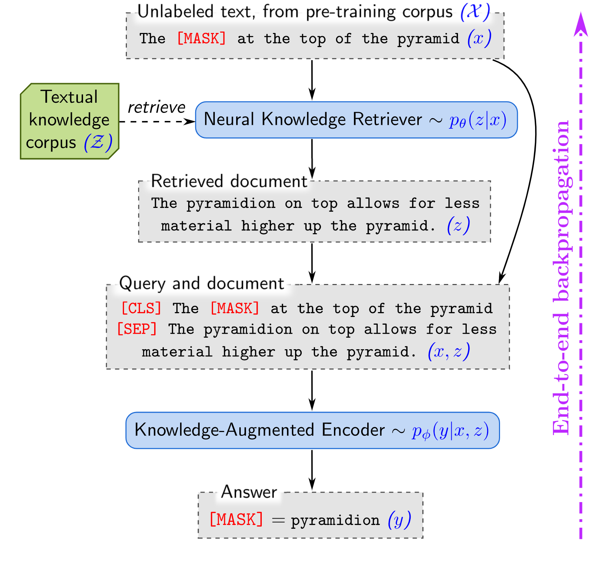
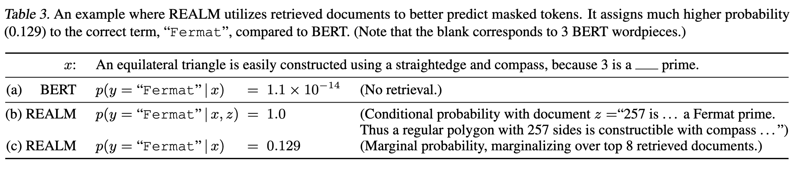
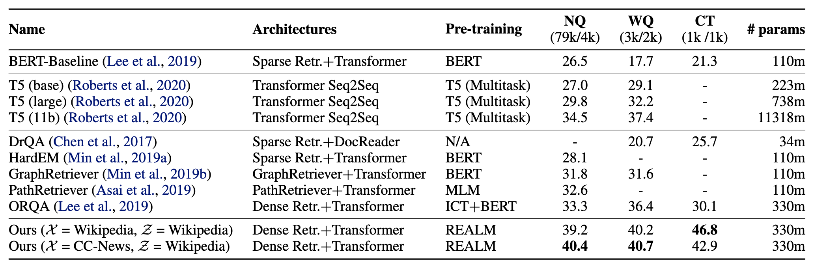

REALM: Knowledge and Transformers
Summary for the Hugging Face awesome-papers reading group, March 3, 2020. Paper: https://arxiv.org/abs/2002.08909.
Background: Language Models as Knowledge Bases
Due in large part to the massive size and scope of the text corpora on which they are trained, huge language representation learners like BERT have been shown to encode a surprising amount of world knowledge in their weights. A recent EMNLP paper posed the question of whether models like BERT can be thought of as having some form of latent knowledge base in their parameters. Models like BERT, and in particular T5, have been shown to do surprisingly well on open-domain question answering, a deliberately information-intensive task, despite having no access to external databases (incidentally, REALM shows how well we can do when such a model is given that access). All of this is to suggest the possibility that, given enough parameters and training data, models might be able to make external knowledge augmentation superflous, instead inferring relevant knowledge from text corpora and encoding it in its parameters.
Background: Instance-based Learning and Retrieve-and-edit Models
Instance- or memory-based learning is a family of ML algorithms which compare a data point with instances already seen in training (or existing in some reference set), rather than relying entirely on learned model parameters for generalization. An example of this class of algorithm is KNN, which looks up the most similar points in a training set to generalize to a new instance. Retrieve-and-edit can be thought of as a type of instance-based learning with two components: a retriever which chooses similar training examples to a given data point, and an editor which then modifies the retrieved examples to form an appropriate prediction.
Recently, KNN Language Models was proposed as an ICLR 2020 paper. This method looks up the nearest neighbors in LM-embedding space to generate target word predictions. The method does quite well in terms of perplexity, but the authors don’t evaluate on downstream task performance, and it’s questionable how amenable the method is to downstream fine-tuning at all. Regardless, it’s a great example of using instance-based learning to improve model performance.
Unlike KNN-LM, REALM incorporates retrieved instances by appending them to the model context, but it is not the first to propose such a method. Its direct precursor (published by one of REALM’s first authors), Latent Retrieval for Weakly Supervised Open Domain Question Answering, introduces a pre-training task for the corpus retriever which “makes it possible” to train end-to-end on Wikipedia. Much of the work presented here as novel actually builds upon work done in this prior publication. The specific contributions presented in the REALM paper largely involve pre-training tasks and computational tricks, ultimately yielding impressive empirical results on OpenQA. Other methods, such as Facebook’s DrQA, employ methods for retrieving knowledge from Wikipedia text as well.
REALM: Retrieval-Augmented Language Models
The authors propose a method for training a masked language model (MLM) by sparsely “attending” over all of Wikipedia in an end-to-end fashion.

At a high level, the method goes like this: find the most similar text passages in BERT space, add those passages to the input as additional context, and then make a prediction.
Here’s the more formal, probabilistic explanation of their training objective: Suppose we have a corrupted sentence \(x\) and hidden tokens \(y\), as well as a textual knowledge corpus \(\mathcal{Z}\) (i.e., Wikipedia articles). The objective involves marginalizing over the entire Wikipedia corpus:
\[ p(y|x) = \sum_{z\in\mathcal{Z}} p(y|x,z) p(z|x) \]
Of course, summing over every document in Wikipedia is computationally impractical. In some cases we approximate things like this with Monte Carlo:
\[ p(y|x) \approx \frac{1}{K} \sum_{z\sim p(z|x)}^K p(y|x,z) \]
In other words, if we can sample \(K\) documents from the conditional distribution \(p(z|x)\) and sum over the resulting target likelihoods, we get an unbiased estimator of the objective.
In practice, the authors sample from Wikipedia by simply taking the top \(K\) most similar documents to \(x\). They did this because selecting the top \(K\) allows them to use Maximum Inner Product Search (MIPS) for huge computational benefits, but at the cost of a biased approximation of the objective.

The authors evaluate their model on the downstream task of open-domain question answering, comfortably outperforming all other evaluated systems. It should also be noted that most of the included benchmark methods (excluding T5) also use Wikipedia in some way for external information at test time.

My 2 cents
I found this paper interesting because of its commentary on knowledge representation and instance-based language modeling. Do language models have latent knowledge bases? To what degree is that knowledge accessible? This paper makes the argument for “explicitly” modeling the relevant knowledge needed to perform a given task, rather than relying on inferred knowledge. However, the impressive performance on OpenQA benchmarks notwithstanding, they do nothing to substantiate their claims about improved interpretability and modularity of model predictions. For all we know, retrieval from Wikipedia could have increased the knowledge encoded in the model parameters, rather than decreased it.
It would also have been interesting to see more analysis on what exactly the model gets out of retrieved examples. Given that Wikipedia is a natural text corpus, is it possible that the model is attending to linguistic cues in retrieved examples in addition to factual information? The paper focused more on the computational aspect of things, which to be fair is arguably where their greatest contribution was, but I wish they had done some more analysis.
Discussion Questions
- In the introduction, the authors state the following: “In contrast to models that store knowledge in their parameters, this approach explicitly exposes the role of world knowledge by asking the model to decide what knowledge to retrieve and use during inference.” In what way is is this type of knowledge-augmented model valuable compared to standard models which rely on the “latent knowledge” in their parameters? Will the future of NLP involve explicitly incorporating external knowledge, or will such methods become obsolete with bigger and better models?
- Should Wikipedia be the go-to general “knowledge base”? Should we focus more on structured knowledge (such as WikiData, which is built from Wikipedia) or large text corpora?
- The REALM objective involves marginalizing over the document corpus. The authors approximate this by summing over the predictions corresponding to the top-k highest scoring documents. Presumably, they take this approach (rather than coming up with a stochastic sampling method) to get the computational advantages of asynchronous MIPS. Is this biased estimator of the objective problematic or not a big deal? Why?
- Is there a future for instance-based models like REALM in
transformers? - In the discussion, the authors mention that there are several different lenses through which you can view their method: a different take on knowledge representation and augmentation; a transformer with much larger, sparsely-attended contexts; a memory-based or retrieve-and-edit model with learned retrieval. Do any of these perspectives particularly resonate? Are there others that you prefer?
Summary of HF Internal Discussion
- When knowledge needs to be updated, models like T5 which encode knowledge in their weights must be retrained to reflect the new information. If the model relies on the knowledge base, theoretically all you have to do is update the knowledge base. That’s a major advantage for real-life deployed QA systems, for example.
- Bootstrapping the retrieval model is a tough thing to do and the Inverse Cloze Task is a smart way to go about it.
- Impossible to know whether the biased objective (Q3 above) has a negative impact on results without more analysis or experimentation, but it would have been nice if the authors discussed it more in the paper.
- It would nice to see evaluation on tasks other than just OpenQA.